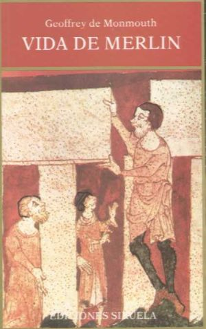

Le roi Arthur, ou Arthur Pendragon, est, d'après les romances médiévales, un seigneur breton qui aurait organisé la défense des peuples celtes des îles Britanniques et de Bretagne armoricaine face aux envahisseurs germaniques à la fin du Ve siècle ou au début du VIe siècle. La légende d'Arthur est principalement inspirée par le folklore1 et l'invention littéraire, et son existence historique n'est pas attestée. Les sources historiques sont recueillies sur de rares textes contradictoires, essentiellement des poèmes et contes en langue galloise, des annales et chroniques décrivant la romanisation et la christianisation de la Grande-Bretagne comme les Annales Cambriae et l'Historia Brittonum et la vie des premiers saints de l'île bretonne, comme Gildas le Sage. Le nom d'Arthur apparaît également au VIIe siècle, dans d'anciens poèmes tel que le Y Gododdin. Son histoire se situe à une époque où le terme « Bretagne » désignait la grande moitié sud de l'actuelle Grande-Bretagne.
Au XIIe siècle, l'écrivain français Chrétien de Troyes y ajoute Lancelot du Lac et le Saint Graal et crée le genre de la romance arthurienne (en puisant dans la matière de Bretagne), qui devient un domaine important de la littérature médiévale. Dans ces histoires, la narration se concentre souvent sur d'autres personnages, tels que les différents chevaliers de la Table ronde au lieu de se focaliser sur le roi Arthur. La littérature arthurienne a prospéré pendant le Moyen Âge, avant de perdre de l'importance dans les siècles qui suivent. Au XVIIe siècle, Henry Purcell , l'ange de la musique Baroque, a su explorer l'univers arthurien avec panache.
L'histoire est redevenue un sujet à la mode depuis le XIXe siècle. Au XXIe siècle, le roi Arthur est toujours un personnage mis en scène, à la fois dans la littérature mais aussi dans les adaptations scéniques (festivals, spectacles vivants), au théâtre, au cinéma, à la télévision, dans les bandes dessinées, et d'autres médias.
De nos jours, l'histoire du Roi Arthur est moins une hyperbole religieuse qu'une allégorie de la quête, du respect, de l'amitié et de la trahison. Elle est indissociable du Chateau de Camelot, de l'île mythique d'Avalon et d'une union sans amour avec la Reine Guenièvre, annonçant la disparition du monde arthurien.
Geoffroy de Monmouth dédie son œuvre à des bienfaiteurs qui sont tous d'origine normande : Étienne, roi d'Angleterre (1135-1154), fils du comte de Blois et petit-fils de Guillaume Le Conquérant, et Robert, comte de Gloucester, deuxième personnage du royaume après le roi. Face à un peuple breton qui n'oublie pas les origines normandes de ceux qui les gouvernent, ces puissants personnages qui dirigent alors l'Angleterre ont besoin de se rattacher à un passé glorieux et à un héros dynastique. Geoffroy de Monmouth le fait en racontant comment autrefois la Bretagne s'est formée par une volonté expansionniste qui a culminé avec Arthur. Il crée ainsi un personnage qui pour les Bretons va être l'équivalent de ce qu'est Charlemagne pour les Français. Entre Capétiens et Plantagenêts, il y a en effet une rivalité idéologique. Le rite du sacre et de l'onction qui caractérise la monarchie française, le pouvoir thaumaturgique des rois, l'ascendance exceptionnelle de Charlemagne, empereur d'Occident et lieutenant de Dieu sur la terre, enfin la riche hagiographie et la littérature épique qui existe aux 11e et 12e siècles autour de la « matière de France » donnent à la monarchie française un passé prestigieux. Les rois de Bretagne, qui tout au long du 12e siècle construisent un état de plus en plus fort en face des autres royaumes d'Occident, ont besoin d'un héros national qui soit l'emblème de la monarchie insulaire.
Réinventant le passé à partir de sources légendaires, Geoffroy de Monmouth quitte son rôle de chroniqueur pour entrer dans la fiction, poussé par un désir de légitimer le passé breton pour servir la royauté contemporaine. Après avoir intégré à son récit le mythe glorieux des origines troyennes de la Bretagne en racontant comment Brutus, arrière-petit-fils d'Enée, sinstalla dans une île encore sauvage appelée Albion, puis Bretagne, il introduit un autre héros mythique lié à la christianisation de l'île, Arthur, un jeune homme d'une valeur et d'une libéralité exceptionnelles.
Le merveilleux, profane et religieux tout à la fois, entoure le héros : l'emblème d'Arthur est le dragon, ses armes sont d'origine féerique, en particulier son épée Caliburn, son écu porte l'image de la Vierge Marie. La Bretagne est alors encore terre d'enchantements, les lacs et les forêts sont encore soumis à des forces magiques. Arthur est d'abord vainqueur de monstres et de géants, puis des ennemis qui comme les Scots menacent l'intégrité de la Bretagne ; il soumet l'Irlande, le Danemark, l'Islande, la Norvège, la Gaule et est le vainqueur du géant Frollo qui détient la ville de Paris, puis se prépare à marcher victorieusement sur Rome lorsqu'il est trahi et tué par Mordred, son neveu.
Grâce à Geoffroy de Monmouth les rois d'Angleterre disposent à leur tour d'une figure royale mythique et d'un passé prestigieux.
Geoffroy de Monmouth , né vers 1100 et décédé vers 1155, est un évêque gallois, auteur de textes à prétention historique. Il écrivait en langue latine et vivait au monastère de Glastonbury.

{kind=link}